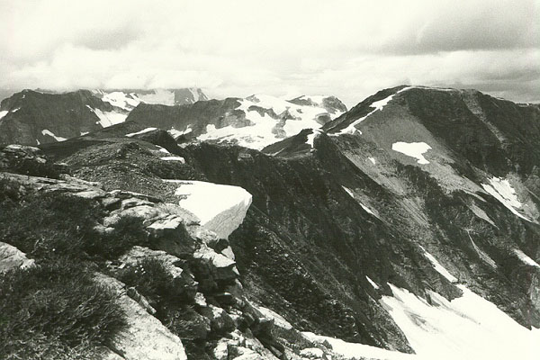
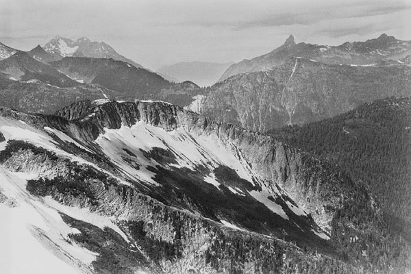
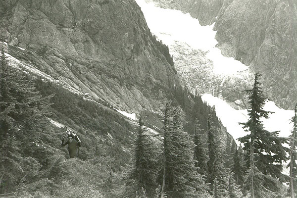

Easy Ridge
Marek, Jake and I were dreaming about Mt. Challenger. The big gentle glacier. The beautiful rock pyramid. The piton in the one place you need it. The views of the Pickett Range. Ahh!
Of course, there is the 17 mile approach, the river ford, the Imperfect Impasse to deal with. And what about the weather? By mid-week I was glued to my screen, divining the professionals true meaning in a cloud of “HI PRSUR CRUMBLNG OVRNGHT W/SNO SHWRS LT FRI.” The weather looked bad, no matter how you sliced it. First, hope was held out for Sunday, then the sun moved to Monday, and on Friday, the forecast called for unmitigated sun only on Tuesday. I panicked, calling Jake and emailing Marek: “ABORT! ABORT! WE SHD CLMB IN EAST. WEST SCKED IN!!” But Marek had an optimistic forecast, so we went ahead. So we arrived at the trail-head under gray skies at 9 pm Friday. We had brought a tent, expecting some bad weather to clear out by summit day. Jake’s pack was comically large, but seriously heavy!
We were happy, because it wasn’t actually raining, and as darkness fell we hiked over Hannagan Pass, and down into the Chilliwack valley. Around 1 am, we reached Copper Creek Camp, and were trying to sleep by 2. With 8 miles of the approach now behind us, we felt optimistic about Saturday.



I had no history with this area at all, while Jake and Marek had tried once before, getting to various points along the trail. We crossed the river in Jake’s old tennis shoes, then Marek led confidently through soaking brush to a steep trail in the forest. Probably due to this brush, his feet were already wet a few hundred feet up from the river. Still, we were happy, climbing in occasional rain and patches of blue sky, always the next valley over. We reached the ridge crest, where I found a “short cut,” that merely wasted time in a loose gully. We scrambled up Easy Peak in a cold wind, and reached Marek’s high point from the year before. We couldn’t see more than 200 feet away in the fog, rain and wind, but Marek used some amazing psychic powers to lead us on a gentle downward traverse to an area near the Imperfect Impasse. We came down about 1200 feet in deep grassy slopes, then rock and snow. Down here, we could see better, and we admired Perfect Pass, our intended destination for the night.
All we knew about the Imperfect Impasse was that it was a deep gully that required some technical climbing to cross, or else a 1000 foot descent and re-climb of the other side. I was determined to find the technical way, and I had some information about it. We came to the edge, where Jake and Marek gave me a few minutes to explore. This thing was pretty scary, and pretty far from home. At a flat spot by a tree, I believed I needed to climb up 200 feet on a buttress. I did this, then worked my way onto very exposed 3rd and 4th class ground. Everything was wet, and a little foreboding. This place gave me the willies! I seemed to be somewhere others had been, since the handholds had a “used” appearance. I could tell because they were free of moss, and some dirt had been cleaned out. I was looking for a bolt to indicate I was on route, and expecting to find a piton or two. I also knew that most people didn’t even rope up. “It’s casual, don’t sweat it.” people would say. But I was sweating it. To keep looking required me to traverse over a frighting drop with minimal holds, that just got smaller. I decided for my own health, and the health of the team, that this couldn’t be the way. Climbing carefully down, I wondered what to try next. “That is NOT the way,” I said, eyes bulging, to Marek, who eagerly agreed. Jake was already hiking down, and Marek took off too.
Now, as we descended an uncomfortable boulder field, we argued hotly for a while (well, at least I did, everybody else thought I was insane). I wanted to keep looking for the route, sure that I had missed it. As it turns out, Marek’s beta indicated that we needed to get close to the valley floor and ascend the next pass over beyond Perfect Pass, and this was no place to be wasting time. Being already a little high-strung from my scrambling adventure, and wet and tired, I didn’t want to lose the hard-won elevation, but I merely succeeded in frustrating my companions. We agreed to camp at the first available place down the slope, near the Impasse. We found a suitable tent platform, and Marek raced off downhill to investigate the route that Chris and Michael took last year. I raced over and crossed the Impasse at this easy point, deterred from getting onto the opposite slope by wet, mossy slabs. But I felt it was possible to go up from this point, although it looked like a hellish bushwhack. Marek reported success and we decided to go down that way in the morning. We had taken quite a bruising as a team, with both Marek and I strongly believing we each knew the way to get to the glacier. But Marek’s excellent Borscht soup and a hot meal brought us together again.
In the morning, the sky was clear! Wonder of wonders, we were quite happy! We geared up, had a few sips of borscht, and hiked down towards the wild valley floor. Marek had scouted a likely place to cut across the brush, and we set off into an evil bushwhack. It would have been ok if it were dry, but the trees were dripping, and before long we were soaked! Perhaps this is the theme of our trip? We cursed at the cold streams of water filling our boots, and found ourselves halted by the Imperfect Impasse when the brush ended in cliffs. Jake had had enough, and I think we were all doubtful about climbing to a high pass under the icefalls and gray cliffs of the valley head. We beat the brush back to our tent to regroup.
Our initial optimism was replaced by desperation. “It’s okay, we’ve still got time!” Jake and I had gained a blinding faith in a new idea for crossing the Imperfect Impasse high up. We decided I was exploring too low, and by climbing up to the top of a buttress, we would definitely find the route. I think Marek rolled his eyes at this, but we huffed and puffed our way back up and began searching again. Jake and I took different lines. After 30 minutes, we had come up empty again. Back we went to my line of the evening before, and we just succeeded in scaring ourselves enough to give up. We did find a sling and a ‘biner high on an outcrop, but no sign of a feasible route. Disillusioned and heartbroken, we joined Marek and mournfully decided to hike out. For Marek, this defeat was most crushing. I mostly felt guilty for advocating a route strongly, then not being able to find/complete it. The emotion of sadness and resignation was great for us all.
We climbed back to Easy Ridge with our gear, the only incident being that I fell on mossy rocks down a smooth streambed. But the sun was out, and the views were glorious. For the first time, I was smiling, having temporarily forgotten the heavy pack and the crushing defeat. Mt. Blum looked really nice, and the North Face of Mt. Shuksan was ominous. The more so because it was being engulfed by black clouds that came our way fast. Abruptly, the weather window had closed, and we were back to Gore-Tex and slogging in wind and rain. We wanted to get off the ridge-top in case the storm became violent. I went ahead at this point, and blazed all the way down to the Chilliwack River without stopping. I used Jake’s old shoes to cross, then Marek appeared. I threw a shoe to him, but we both stood surprised when the shoe reached the middle of the stream and floated away. Then I threw the other one, and it didn’t make the shore either. What was wrong with me? I was as puzzled as Marek must have been. So Marek and Jake had to cross in socks, and I endured ribbing about throwing lessons for a while.
Anyway, by this point we were all completely soaked, and had to walk 10 miles over Hannagan Pass to the car. This was a very difficult portion of the day. The constant rain brought new water in, and there was no chance to dry inside with body heat. By the time we reached the pass, I was a little bit fearful of hypothermia. I had really slowed down, and noticed Jake and Marek were keeping an eye on me. Despite wearing all my clothes and hiking uphill, I was cold. But having made the pass, I felt I could get down the other side with some effort. I took off as fast as I could, thinking about dry clothes at the car. We had all been humbled by this weather. None of us had ever been so wet and cold before. I reached the car at 10:10, and shivered for 10 minutes until Jake came with the key.
We’ll all stand on top of Challenger one day, it just didn’t happen last weekend. Thanks to Jake and Marek for their excellent companionship!